File "<ipython-input-2-5196071441ec>", line 1
2 plus 2
^
SyntaxError: invalid syntaxWelcome to the first PSTAT 5A Computing Lab! As we will soon learn, computers play an integral part in effectively and efficiently performing statistical analyses. The primary goal of these Computing Labs is to develop the skills to be able to communicate with computers, and also learn the basic principles and language of programming.
Structure of Labs
Every week we (the course staff) will publish a lab document, which is intended to be completed during your Lab Section (i.e. your first Section) of the week. Each lab document will consist of a combination of text, tips, and the occasional task for you to complete based on the text provided. Your TA will cover exactly what you need to turn in at the end of each lab in order to receive credit, but you should read all lab material carefully and thoroughly as content from labs will appear on quizzes and exams.
What Is Programming?
Computers, though incredibly useful, are fairly complex machines. To communicate with them, we need to use a specific language, known as a Programming Language. There are a number of programming languages currently in use, with names such as R, Julia, MatLab, and - the language we will use for this course - Python.
Python programs can be written in a number of different environments, such as a text editor (e.g. Notepad, VS Code, etc.) or a Terminal window. For this class, we will use Jupyter Notebook (where Jupyter is pronounced like the planet), an interactive environment that has the added benefit of being hosted online meaning you do not have to download anything onto your personal machines in order to run Python code!
Getting Started
- Navigate to https://pstat5a.lsit.ucsb.edu
- Click the “Sign in with your UCSB NetID” button, and sign in.
- Under “Notebook”, click “Python 3 (ipykernel)” (see below).
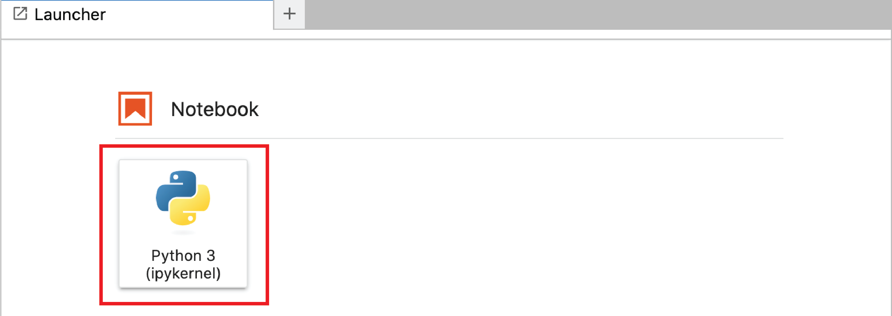
Congratulations- you have just made your first Jupyter notebook! Now, it’s time for our first task:
Task 1
Change the name of your notebook to “Lab01” using the following steps:
- In the lefthand menu bar, find the notebook you just created (by default this will be something like “Untitled” or “Untitled1”), and right-click and click “Rename” (see picture below)
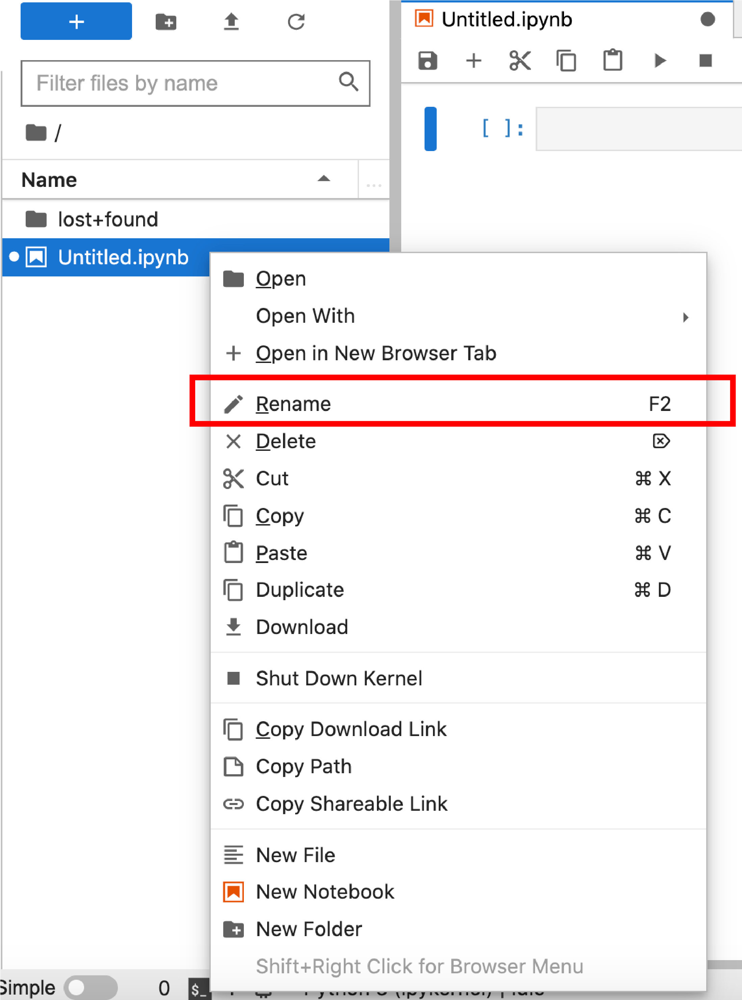
- Rename your file to “Lab01”, and then hit the return (enter) key on your keyboard. You should see the filename in the menubar update:
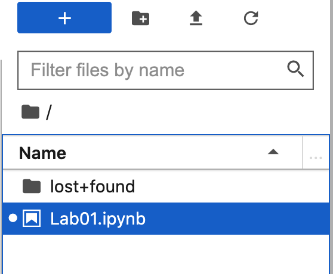
JupyterHub Environment
Let’s take a minute to familiarize ourselves with the JupyterHub environment. Every Jupyter notebook is comprised of what are known as cells; these are the shaded grey rectangles that appear in a Jupyter notebook.
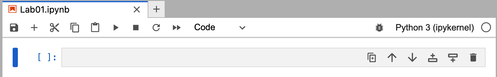
If your cell has a grey background (like in the image above), it is inactive. To activate a cell, place your cursor inside it, and click:
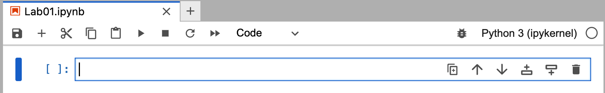
means it is selected and active, and ready to be populated with text and/or code.
Important
When you run code using the “Run” button at the top of your environment, only the active cell will be executed.
Cells
There are two main types of cells we will be using in this class: Markdown cells (which include text/descriptions, but no code) and code cells (which contain code that needs to be run). We’ll be talking a bit more about Markdown cells in a few weeks.
Task 2
If you haven’t already, click into the code cell that was automatically created when you created your document to activate it.
Click on the dropdown menu that currently says “code” (near the center of the top of your interface), and select “Markdown”
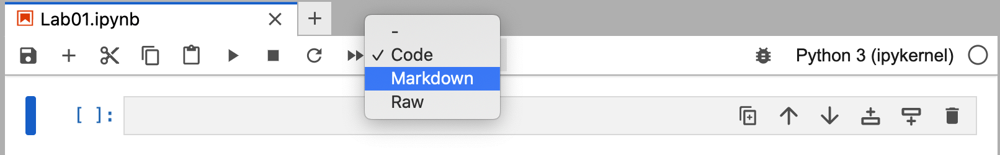
- Click back into the cell, copy-paste the text [including the hashtag!]
# Task 2, and then run the cell by clicking on the button that looks like a “play” symbol at the top of your window:
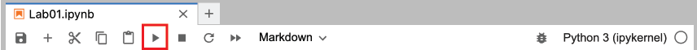
- Note that after running your cell from step 3 above, Jupyter automatically created a new code cell. Click into this code cell and run the code
2 + 2.
When you are done, your notebook should look something like this:
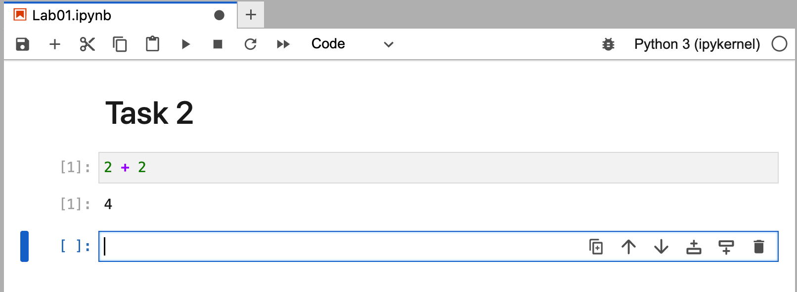
Notice that after running a cell, Jupyter automatically adds a new cell right after it!
Tip
To run a cell and automatically create a new cell underneath it, use the keyboard shortcut SHIFT + ENTER.
By the way, do you notice the little In [1]: at the left of our first cell? This is Jupyter’s way of letting us know the order in which the code cells have been executed. The 1 in our cell from Task 2 above corresponds to the fact that this was the 1st code cell we executed in our document.
Coding with Python
There is a reason we use the word “language” to describe programming languages- that is because they function quite like a human language. This means that they each have their own syntax (i.e. set of grammar rules). It is precisely the syntax of the Python language that we will be learning over the course of these Computing Labs!
Programs are made up of expressions, like 2 + 2. We evaluate expressions by running (or executing) them in a programming language. Expressions are like the sentences of programming- they contain complex pieces of information that are conveyed between the user and the computer.
Much like sentences in other languages, expressions must obey a rigid syntax. For example, when we want to perform addition in Python we must use the + symbol; we can’t, for example, say 2 plus 2.
What happens when we violate a syntax rule? Well…
Task 3
- Create a mardown cell and write
# Task 3 - Create a code cell, and run
2 plus 2. (You should get an error!)
Note
For this class, we expect you to precede each code cell from a particular task with a markdown cell that says # Task X (where X is the number of the task).
We will stop explicitly writing this step in the tasks below, but you are still expected to include a labeling cell!
Well, what is this error saying? Let’s examine it more closely.
Indeed, Python is telling us exactly what went wrong- the SyntaxError part of the error message tells us that we violated one of the syntax rules of Python, and the ^ pointing to the p in plus is telling us that the exact syntax error occurred when we tried to use the word plus.
Tip
Always read error messages!
The messages that Python displays when we get an error are Python’s way of trying to communicate with us what is going wrong!
Python as a Calculator
Alright, let’s get our hands dirty with some real programming! One of the many uses of Python is to help us compute arithmetic quantities very quickly. As a rule-of-thumb, Python adheres to the order of operations:
- Parentheses
- Exponents
- Multiplication
- Division
- Addition
- Subtraction
Here is a list of mathematical operators and their corresponding Python syntax:
| Operation | Python Operator | Example | Result |
|---|---|---|---|
| Addition | + |
2 + 2 |
4 |
| Subtraction | - |
2 - 2 |
0 |
| Multiplication | * |
2 * 2 |
4 |
| Division | / |
2 / 2 |
1 |
| Exponentiation | ** |
2 ** 2 |
4 |
Task 4
Compute the following:
\(\displaystyle \frac{2 + 3}{4 + 5^6}\)
\(\displaystyle (1 - 3 \cdot 4^5)^{6}\)
Naturally, Python is capable of much more than just basic arithmetic!
Task 5
Create a code chunk and run sin(1) to compute the sine of 1.
Uh-oh- looks like we’ve encountered another error! Indeed, even the most experience coder will often run up against errors like this, and need to subsequently enter the stage of debugging their code.
We’re now getting a new error: this time, it’s a NameError. As the name suggests, this is Python’s way of telling us that it doesn’t recognize the name of something we’ve written. In fact, it’s explicitly saying:
NameError: name 'sin' is not defined,
Specifically, Python is telling us that it (somehow) doesn’t know what sin means. Why? Well, to answer that, we need to take a bit of a detour into the world of modules.
Python Modules
It is important to note that all Python objects take up space in the form of memory (i.e. storage space on your computer). Nowadays, with recent innovations in computers and computer memory, this is not so much of an issue but historically, when many of these programming languages were first being created, optimizing space was of the utmost concern. (Even today, efficiency is a guiding tenet of most programmers!)
Think of it this way- if you are doing work on code that doesn’t involve much trigonometry, there isn’t a whole lot of need to have the sin function readily available. The idea programmers had was to compartmentalize, and store certain functions in what are known as modules.
Modules are Python files containing definitions for functions and classes (we’ll talk about data classes a little later). While data types and built-in functions in the Python standard library are available for immediate use, modules need to be imported first.
The syntax for importing all functions from a module is:
from <module name> import *Sometimes, we may not want to import the entirety of a module and instead import only a couple of functions from that module. In that case, we would use the syntax:
from <module name> import <function name>We’ll talk a bit more about modules in a future lab. For now, let’s return to our task of computing \(\sin(1)\).
Task 5 (cont’d)
It turns out that the sin() function is located in the math module Load all functions from the math module, and then try re-running sin(1).
Functions
We will talk extensively about Python functions in a few weeks. For now, suffice it to say that Python functions work just like mathematical functions: for example, note how we used the sin() function in the previous task. One piece of terminology that is somewhat specific to programming is the notion of calling- when we say we call a function on an argument, we mean that we’re passing that argument through the function. So, for example, in Task 5 we called the sin() function on the argument 1.
Variable Assignment
Let’s talk a bit about variables. Just like in math, variables in a programming language refer to a placeholder name for a particular piece of information (be it a function, value, etc.) The act of storing information in a variable is called assignment, and in Python variable assignment is performed using the = symbol.
<variable name> = <what you want to associate with the variable>For example, after running
x = 2the quantity x will always be synonymous with the quantity 2, and running x + 2 will return a value of 4 (as 2 + 2 = 4).
Python affords a lot of flexibility when it comes to variable names- that is, we can pick almost anything we want to be a variable name! There are, however, some exceptions:
- Variable names cannot start with a number
- Variable names cannot include a space
Tip
It is a good programming practice to give your variables names that are descriptive, but not overly long.
If we want to view the value stored in a variable, we have two options: we could simply type the name of the variable, and run the cell:
x2or we could pass the variable name into a call to the print() function:
print(x)2
Task 6
(a) Define a variable called my_variable, and assign it the value 5.
(b) Now, run the command print(My_variable) (note the capitalization!)
Tip
Python is case-sensitive.
Sometimes it will be necessary to update or re-assign a new value to an existing variable. For example, let’s examine the structure of the following code:
x = 2
x = x + 3What do you think running x will return? If you said 5, you’d be correct! The key point of this is:
Important
In variable assignment, Python starts by executing the righthand side of the equality before executing the lefthand side.
So, in code example above, Python first executed x + 3 (which is equivalent to 2 + 3; i.e. 5), and then re-assigned x the value 5.
Data Types
Before closing out this lab, we should talk a bit about the quantities we assign to variables- i.e. the different data types in Python.
The term data type loosely refers to the actual type of a particular quantity (e.g. numerical, character, etc.) The main data types we will discuss in this lab are:
float: refers to numerical (real-valued) quantitiesint: short forinteger; refers to numerical quantities that are integersstr: short forstring; refers to character- or text-type data (and will always be enclosed in either single quotation marks or double quotation marks)
Task 8
Run each of the following:
type(1)type(1.1)type("hello")
Let’s combine our knowledge of variable assignment with our newfound knowledge of data types!
Task 9
(a) Perform the following variable assignments:
course = "PSTAT 5A"num_sections = 4section_capacity = 25
(c) A new section has been added! Update the variable num_sections to be one more than when you initially defined it above. (Don’t just use num_sections = 5- think about our discussion on updating variables above!)
(b) Using comments, write down what you think the output of each of the following expressions will be:
type(course)type(num_sections)num_sections * section_capacity
Then, run each expression in a separate code chunk and comment on the results.
(c) Create a new variable called course_capacity and assign it the value of the maximum capacity of the course. (Hint: there are only 5 sections, and each section has a maximum capacity of 25. Try to use your already-defined variables as much as possible!)
Tip
The type() function can be used to identify the data type of a particular quantity.
Final Formatting
It’s time to start adding the finishing touches to our first lab!
Task 10
- Click on the gear-shaped icon in the top-right of your console:
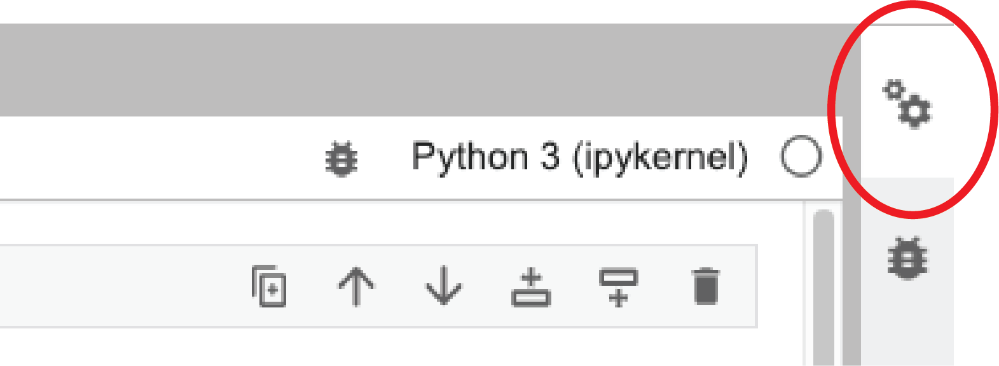
- Scroll down until you see the
Notebook Metadata:
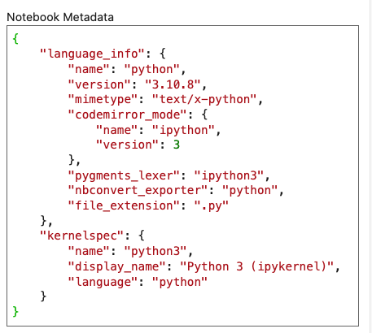
- Right after the second-to-last brace (
}), add a comma,and then the following code:
"authors": [
{
"name": "<YOUR NAME>"
},
{
"name": "<YOUR NETID>"
}
]where you replace <YOUR NAME> and <YOUR NETID> with your name and NetID, respectively. For example, after performing the above steps, my Notebook Metadata would look like:
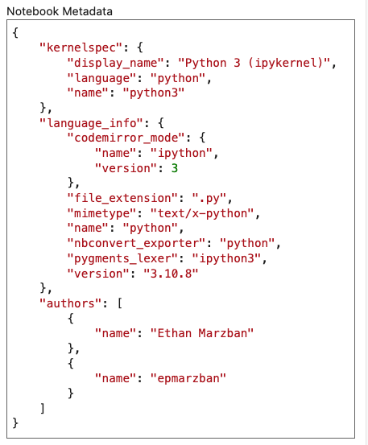
IMPORTANT: If your NetID contains an underscore, e.g. my_netid, then you need to replace the underscore with the text \\textunderscore (with the two backslashes at the beginning) followed by a space. Otherwise, your Lab will not convert to a PDF properly. So, for example, if your NetID is my_netid then you should write your NetID as my\\textunderscore netid. Your TA will go over how to update your Notebook Metadata in the last few minutes of Lab.
What to Turn In
Congrats on finishing the first PSTAT 5A Computing Lab! Here’s what you need to submit:
- Your downloaded
.ipynbfile - Your downloaded
.PDFfile
(Please consult the video on Canvas showing you how to upload your work to Gradescope). Toward the end of Lab, your TA will show you how to download the above files. You will have until 40 minutes after the end of your Section (e.g. if your Section ends at 1:20pm, then you have until 2:00pm to submit) to turn in your work in order to get credit for the lab. Also, please remember that you need to upload both a .ipynb file and a .pdf. We will be grading labs based on effort, so just turn in what you are able to!
Comments
When writing large pieces of code, programmers will often utilize comments to annotate their work and help readers understand what their code is doing. In Python there are two types of comments: inline comments and multiline comments. Inline comments are created using the hashtag (
#) and multiline comments must be enclosed in three quotation marks ("""). As an example of both, consider the following snippet of code:Go back and add some descriptive comments to some of your previous code cells. (You don’t need a separate markdown cell indicating you have done so.)